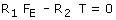
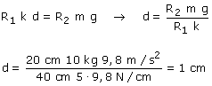

|
Observa que la normal está inclinada para compensar la fuerza del muelle hacia la izquierda y los pesos hacia abajo Rotación de la polea:  Como el sistema está en equilibrio T = m·g La fuerza elástica del muelle es: FE = k·d |

Curiosidad: si el bloque se hubiera colgado directamente del muelle éste se habría estirado 2 cm